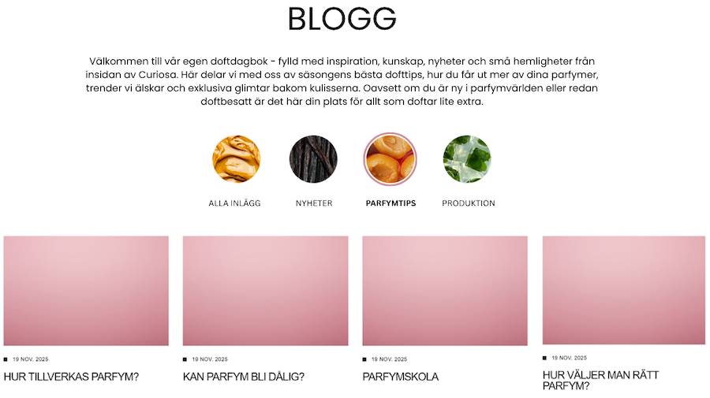
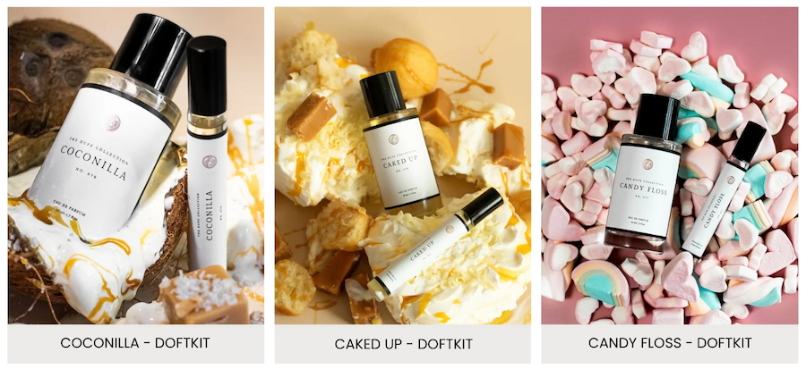

Webb- & dataanalys
Webbanalys · GA4 · CRO · SEO · Shopify
Om projektet
Projektet handlade om att analysera och förbättra en e-handelswebbplats med fokus på användarupplevelse och köpresan. Jag började med att granska webbplatsen och analysera data i Google Analytics 4 (GA4) för att förstå hur besökare använde webbplatsen och rörde sig genom köpresan.
Utifrån analyserna tog jag fram förbättringsförslag och arbetade sedan med att genomföra flera förändringar direkt i Shopify, bland annat inom innehåll och SEO, produkter och webbplatsens struktur.
Webbplatsanalys
Jag granskade webbplatsen ur ett användar- och konverteringsperspektiv och gick bland annat igenom navigation, länkar, produktinformation, betalning, leverans och innehåll. Målet var att identifiera sådant som kunde skapa osäkerhet eller friktion i köpresan. Några identifierade förbättringsområden:
Olika presentation av produktalternativ
När jag granskade produktöversikten såg jag att produktalternativen presenterades på olika sätt när man höll muspekaren över en produkt. För vissa produkter visades storleksalternativen 50 ml och 2 ml, medan andra visade knappen ”VÄLJ ALTERNATIV”. Jag rekommenderade därför ett mer enhetligt sätt att presentera produktalternativen för att skapa en tydligare och mer konsekvent upplevelse för besökaren.
Leveransinformation på produktsidan
Förväntad leveranstid saknades på produktsidan. Jag rekommenderade därför att lägga till leveransinformation nära köpknappen, så att kunden får viktig information innan köpet. Tydlig information om leveransen kan minska osäkerhet och göra det enklare för kunden att fatta ett köpbeslut.
Dataanalys i GA4
I GA4 analyserade jag bland annat trafik, trafikkanaler, engagemang, enheter, populära sidor och produkter, köp per kanal och konverteringsgrad. Jag analyserade även olika steg i köpresan för att se hur besökare rörde sig från besök till genomfört köp och var de lämnade köpresan.
Resultaten använde jag som underlag för hypoteser och förbättringsförslag. Jag sammanställde även resultaten i en dashboard i Looker Studio för att göra analysen enklare att överblicka och presentera.
Uppdatering av webbplatsen
Utifrån analyserna arbetade jag vidare med konkreta förändringar i Shopify. Arbetet omfattade bland annat webbplatsens innehåll och struktur, produktsidor, länkar och nya sidor. Nedan är några exempel på det jag arbetade med i Shopify.
Blogg & SEO-innehåll
Inför arbetet med bloggen gjorde jag en sökordsanalys för att identifiera vad målgruppen sökte efter. Jag använde resultatet som grund för innehållet och skapade en bloggstruktur. Jag skapade även bloggposter och tog fram SEO-inriktat innehåll för att besvara relevanta frågor och skapa bättre förutsättningar för organisk synlighet.

Produkter & produktsidor
Jag skapade bland annat produktsidor för ett doftkit med en parfym och tillhörande parfymolja.

Sammanfattning & lärdomar
Projektet gav mig en bättre förståelse för hur webbplatsanalys och dataanalys kan komplettera varandra när man identifierar förbättringsområden i en e-handel.
Jag fick också en bättre förståelse för hur användarupplevelse, innehåll och SEO kan påverka köpresan och hur dessa delar behöver samspela för att skapa en tydlig och fungerande e-handelsupplevelse.